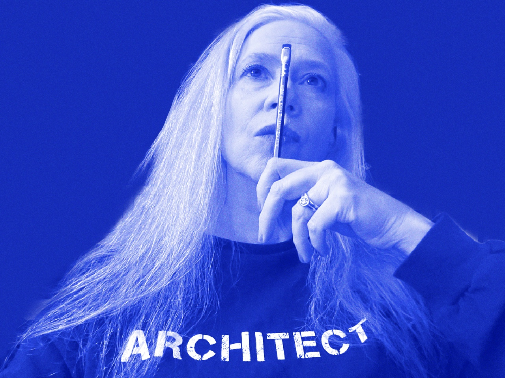
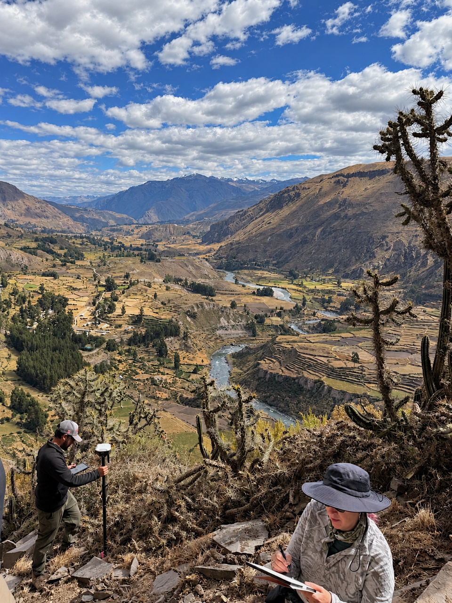

In our modern lives, we spend most of our time in buildings. Humans have amazing abilities of instinctual adaptation to our environment – natural or constructed. We understand buildings more deeply than we consciously realize. I want to awaken your already innate ability to understand our constructed environment by examining architecture from around the world and throughout history.
We can learn to decipher spaces like a language, to unlock secrets of the past, the history of the people who created the spaces and inhabited them, changed them, and still live with them today.
Building Built Us illustrates the lessons of our human development in connection with architecture and how this can apply to the world we live in today.

Laura Lee Intscher is a licensed architect with 40 years experience. Her company, Secret Base Design, specializes in sustainable architecture, straw-bale, and natural plaster construction. Laura travels globally, drawing on location and researching the built environment. Understanding world architecture and history allows her to interpret ancient structures through an informed perspective of construction process, techniques, and design.
Her focus is understanding how architecture is the blueprint for cultural development.
To sign up for The Building Built Us newsletter, please make a request by email.
If you wish to be notified about Building Built Us events or talks by Laura - please email your contact information. As long as supplies last – if you provide your contact information and follow me on social media, I will send you an art postcard by mail (USA addresses only at this time).
